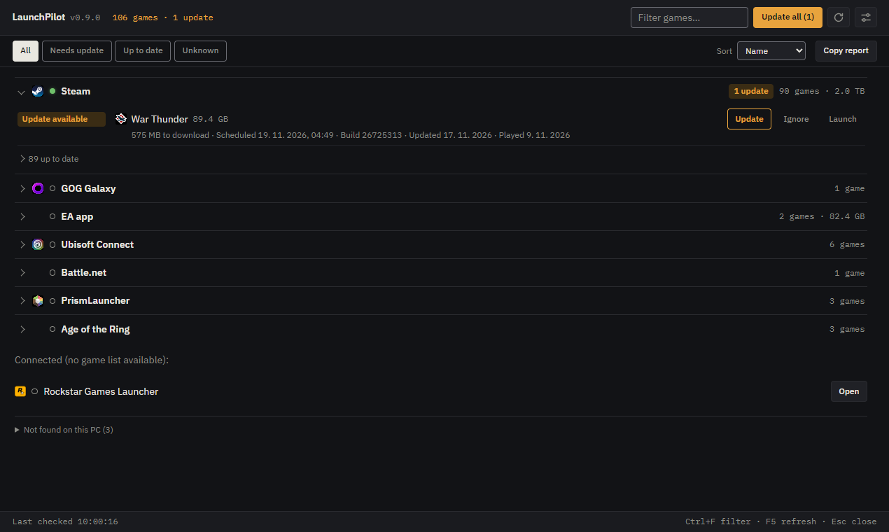

One dashboard for every game launcher on your PC.
LaunchPilot reads what Steam, GOG, EA, Ubisoft Connect, Battle.net and the rest already know locally and shows what needs updating — in one dark dashboard, without opening ten different apps.

What's real, per launcher
Nothing here is invented. If a launcher doesn't expose a real way to know whether an update is pending, LaunchPilot says Unknown instead of guessing.
Steam
Update status — installed build-id vs. the build Steam is targeting. Update opens Steam on that game; Launch starts it.
GOG Galaxy
Update status — installed build vs. GOG's own public content API, no login. Launch starts the game.
PrismLauncher
Update status — the launcher itself via GitHub releases, plus per-mod updates on Modrinth pack instances only
Wargaming Game Center
Update status — installed vs. available version from each game's local game_info.xml
Epic Games
Live "Updating" — in-progress installs from the launcher's own manifest flag plus active staging writes. A queued update that hasn't started shows Unknown.
EA app
Live "Updating" — detected from local staging files; a stalled download shows Update available. Otherwise Unknown. Launch starts the game.
Battle.net
Live "Updating" — detected from local log state. Otherwise Unknown.
Ubisoft Connect
Games listed (including Ubisoft titles installed through Steam) and a real running/not-running signal. Update status is Unknown — no local field exists. Launch starts the game.
Riot Client
Detected, games listed. Update status is Unknown — no local field exists to read.
Age of the Ring
Detected via drive scan (heuristic, no installer footprint to check). Update status is Unknown.
What it doesn't do
- No accounts or logins. It never asks for a password or signs in to anything.
- No telemetry. The only network requests are each launcher's public update endpoint (e.g. GOG, GitHub, Modrinth) and a signed self-update check for LaunchPilot. Nothing about you or your library is sent.
- No guessing. Where a launcher exposes no local update info, the status is Unknown.
- No downloading games itself. Update opens the real launcher; the launcher does the download.
- Windows only.